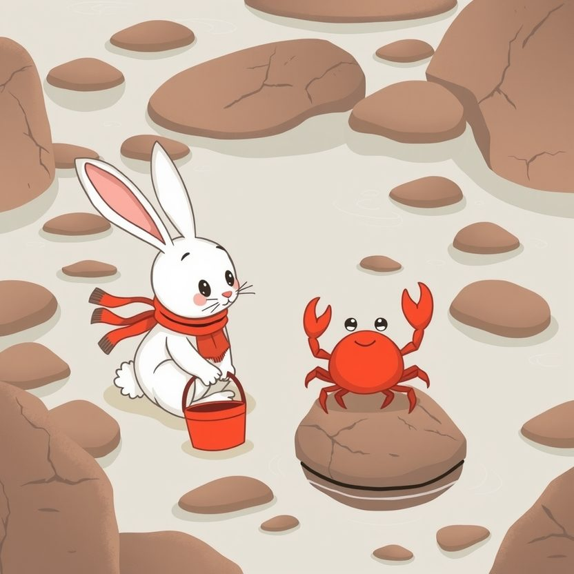

Titistoire › Les Étoiles (3-6 ans)
Rosie et le crabe qui dansait
Une histoire de Rosie la lapine pour parler de : respecter les animaux.

▶ Écouter et regarder l'histoire
Gratuit, sans inscription : la voix lit, le texte suit mot à mot, les images tournent comme dans un album.
Le texte de l'histoire
À marée basse, la plage des Dunes regorge de trésors. Des flaques, des rochers, des algues qui font ploc quand on marche dessus. Rosie explore chaque recoin, son seau à la patte.
Et sur un rocher, elle découvre la chose la plus drôle du monde. Un petit crabe rouge, qui danse. Trois pas à gauche, trois pas à droite, et clac, clac ! font ses pinces.
« Oh ! Je le veux ! Un, deux, trois, partez ! » Rosie est vive comme l'éclair. Hop ! Le crabe est dans le seau avant la fin de sa danse.
« Regardez ! J'ai un crabe ! triomphe Rosie. Il s'appelle Castagnette, et il est à moi. Je vais le ramener à la maison, et il dansera pour moi tous les jours. »
Elle tapisse le seau de sable. Puis elle ajoute un coquillage, pour faire joli. Un bout de biscuit. « Tu vas être très bien, ici. Allez, danse ! » Et elle frappe dans ses pattes.
Castagnette ne danse pas. Il fait le tour du seau. Encore le tour. Puis il tend ses pinces vers le bord, tout là-haut.
Le soir, dans la cabane, Rosie pose le seau sur la table. « Danse, Castagnette ! Un, deux, trois ! » Rien. Elle tapote le seau. Toc, toc. Le crabe se tapit sous le coquillage.
« Il est cassé, ton crabe ? » demande Pompon. « Mais non, réplique Rosie. Il est fatigué. Il dansera demain. »
Mais le lendemain, Castagnette ne danse toujours pas. Le biscuit, il n'y a pas touché. Et il n'est même plus très rouge : il a pâli, d'un petit rose tout triste.
Plume se penche sur le seau. Elle observe longuement, comme elle sait si bien le faire. « Rosie… tu as vu où il regarde ? »
Les deux petits yeux du crabe, au bout de leurs tiges, sont tournés vers la fenêtre. Vers le bruit des vagues. Ils ne bougent pas.
« Sur son rocher, il dansait, murmure Plume. Je crois qu'il ne dansait pas pour toi. Je crois qu'il dansait parce qu'il était chez lui. »
« Mais je m'en occupe bien ! proteste Rosie. Il a du sable, un coquillage, un biscuit ! » Elle serre le seau contre elle, la mine butée. « Et puis c'est moi qui l'ai trouvé. »
Cette nuit-là, un petit bruit la réveille. Scritch. Scritch. C'est Castagnette, qui tente d'escalader la paroi du seau. Il glisse. Il recommence. Il glisse encore.
Rosie pense à ce qu'elle ferait, elle, si un géant la mettait dans un seau. Même un très joli seau. Même avec des carottes. Elle n'aurait pas envie de courir non plus.
Au petit matin, avant que la maisonnée s'éveille, elle prend le seau et descend sur la plage. La marée est basse. Le rocher est là, tout luisant.
« Je voulais te garder parce que tu étais beau, chuchote-t-elle. Mais chez moi, tu n'es plus beau du tout. Tu es juste triste. Pardon, Castagnette. »
Elle incline le seau, tout doucement. Le petit crabe hésite au bord. Puis il se laisse glisser sur le rocher, et il retrouve l'eau salée sous ses pattes. Rosie retient son souffle.
D'abord, il ne bouge pas. Puis une patte. Puis une autre. Trois pas à gauche. Trois pas à droite. Et clac, clac ! Ses pinces claquent dans le soleil levant.
D'un trou surgit un deuxième crabe. Puis un troisième. Toute une ribambelle, qui fait cercle autour de lui en agitant les pinces. Castagnette est redevenu rouge comme une cerise.
Rosie s'assoit sur le sable mouillé, les pattes croisées sur les genoux. Elle ne touche à rien. Elle regarde. C'est bien plus beau que dans le seau.
Tous les matins des vacances, Rosie revient au rocher, à marée basse. Elle s'assoit sans un bruit. Et presque chaque fois, Castagnette vient danser. Pas pour elle. Mais pas loin.
Son seau, elle l'a retourné. Cela fait un excellent tabouret pour scruter les flaques. Dedans, elle ne rapporte plus que des coquillages vides, ceux où personne n'habite.
Et quand un petit arrive avec son épuisette en criant « Oh ! Un crabe ! Je le veux ! », Rosie lui fait une place sur le sable. « Chut. Assieds-toi. Regarde. Il va danser. »